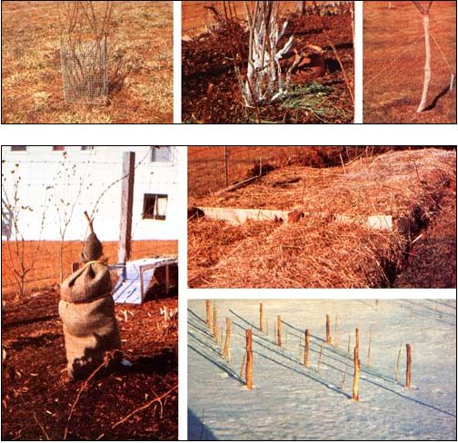

PHOTOS BY THE AUTHOR
TOP: Trees and shrubs may be protected from rabbits by surrounding them with wire mesh or wrapping their trunks with aluminum foil or guard paper. ABOVE: Rotted sawdust is an excellent mulch for flower beds. Note the way in which the staked fig tree is protected by a bag of sawdust too. BELOW, RIGHT: This straw mulch is held in place on a strawberry bed with cheap fishnet. FAR BELOW: Sturdy stakes protect young grapevines from serious wind damage